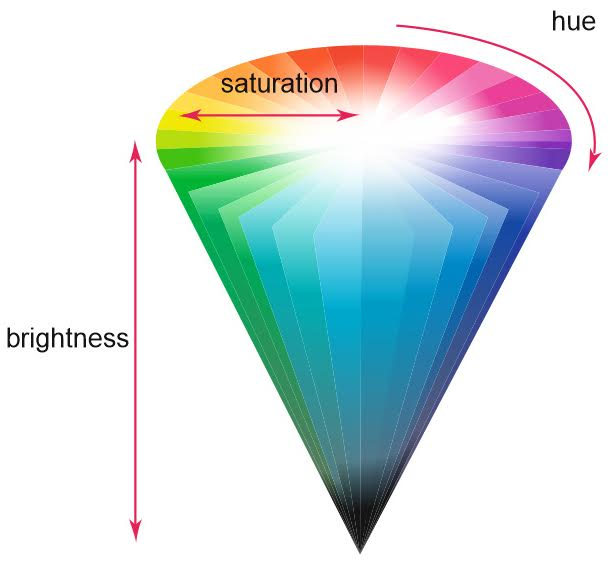

Colores - Por nombre
CSS3 permite insertar una larga lista de colores predeterminados identificados con un nombre específico sin necesidad de introducir códigos RGB, hexadecimales, etc...
En este enlace podrás encontrar toda la lista de colores disponibles por nombre.
indianred
goldenrod
mediumspringgreen
darkturquoise
Colores - Hexadecimales
Los colores en hexadecimal se identifican con un código de 6 dígitos en notación hexadecimal iniciado por una almohadilla '#'.
Los primeros dos dígitos corresponden al color rojo, el tercero y cuarto al color verde y el quinto y sexto al azul. A mayor valor, mayor será la intensidad del color correspondiente, siendo el valor 'FF' el color puro.
#FF0000
#00FF00
#0000FF
#000000
#FFFFFF
Colores - RGB
Los colores RGB (Red Green Blue) se identifican con 3 parámetros que identifican a los colores rojo, verde y azul.
Estos parámetros pueden tomar valores de 0 a 255 y determinan la intensidad de los colores rojo, verde y azul, respectivamente.
rgb(255, 0, 0)
rgb(0, 255, 0)
rgb(0, 0, 255)
rgb(0, 0, 0)
rgb(255, 255, 255)
Colores - RGBA
Los colores RGBA (Red Green Blue Alpha) son una extensión de los colores RGB que incluyen un canal alfa que determina la trasparencia del color.
El cuarto argumento indica la transparencia del color resultante y puede tomar valores entre 0 y 1, siendo 0 transparente y 1 opaco.
rgba(0, 0, 255, 0.2)
rgba(0, 0, 255, 0.4)
rgba(0, 0, 255, 0.6)
rgba(0, 0, 255, 0.8)
Colores - HSL

Los colores HSL (Hue, Saturation, Lightness) nos permiten representar colores con algo más de libertad que los colores RGB dividiendo el color en tres elementos: tono, saturación y luminosidad.
El primer parámetro, el tono o matiz, se representa con un círculo cromático y puede tomar valores entre 0 y 360. Indica los grados a los que se mueve el "cursor" que indica el color.
El color rojo pertenece a los grados 0 y 360, el amarillo al grado 60, el verde al 120 y el azul al 240, formándose entre ellos el resto de colores.
hsl(0, 100%, 50%)
hsl(60, 100%, 50%)
hsl(120, 100%, 50%)
hsl(240, 50%, 50%)
El segundo parámetro, la saturación, se representa como la línea que parte del centro de la rueda cromática. Es un porcentaje que representa la pureza del color, siendo 0% gris y 100% el color puro.
hsl(120, 0%, 50%)
hsl(120, 50%, 50%)
hsl(120, 75%, 50%)
hsl(120, 100%, 50%)
El tercer parámetro, la luminosidad, se representa como un doble cono blanco y negro; la altura en la rueda cromática. Es un porcentaje que representa lo oscuro o claro que es el color, siendo 0% negro y 100% blanco.
hsl(120, 0%, 0%)
hsl(120, 50%, 33%)
hsl(120, 75%, 66%)
hsl(120, 100%, 100%)
Colores - HSLA
Al igual que los colores RGBA, los colores HSLA son una extensión de los colores HSL que incluyen un canal alfa que determina la transparencia del color.
Este canal alfa corresponde al cuarto argumento que puede tomar valores entre 0 y 1 y determina la transparencia del color resultante, siendo 0 transparente y 1 opaco.
hsla(0, 100%, 50%, 0.2)
hsla(0, 100%, 50%, 0.4)
hsla(0, 100%, 50%, 0.6)
hsla(0, 100%, 50%, 0.8)
Colores - Opacity
La propiedad 'opacity' de CSS nos permite modificar la transparencia de cualquier elemento HTML en su totalidad (Color del fondo, texto...).
El valor de la propiedad debe ser un número entre 0 y 1, siendo 0 transparente y 1 opaco.
hsl(60, 100%, 50%) - opacity: 0.2
hsl(60, 100%, 50%) - opacity: 0.4
hsl(60, 100%, 50%) - opacity: 0.6
hsl(60, 100%, 50%) - opacity: 0.8
Degradados
El uso de degrados en CSS, permiten mostrar transiciones entre dos o más colores especificados.
Podemos diferenciarlos entre Linear Gradients (Degradados Lineales) ó Radial Gradients (Degradados Radiales).
Linear Gradient
Para crear un Linear Gradient debemos de definir al menos dos paradas de colores (color stops). Las paradas de color son los colores entre los que se desea realizar el degradado.Se puede indicar también un punto de inicio y una dirección (o un ángulo).
Sintaxis: background-image: linear-gradient(direction, color-stop1, color-stop2, ...);
Linear Gradient - Top to Bottom
Degradado de arriba hacia abajo con los colores verde y amarillo, este es el que se aplica por defecto, se indica unicamente los dos colores.
Sintaxis: background-image: linear-gradient(green, yellow);
Linear Gradient - Bottom to Top
Degradado de abajo hacia arriba con los colores verde y amarillo, hay que indicar la posición con to top a parte de los dos colores.
Sintaxis: background-image: linear-gradient(to top, green, yellow);
Linear Gradient - Left to Right
Degradado de izquierda hacia la derecha, en este caso hay que indicar en el css to right para que el verde empiece por la izquierda y vaya hacia la derecha con el color amarillo.
Sintaxis: background-image: linear-gradient(to right, green , yellow);
Linear Gradient - Right to Left
Degradado de derecha hacia la izquierda, en este caso hay que indicar en el css to left para que el verde empiece por la derecha y vaya hacia la izquierda con el color amarillo.
Sintaxis: background-image: linear-gradient(to left, green , yellow);
Linear Gradient - Diagonal
Degradado diagonal en el que hay que especificar tanto la posición inicial horizontal y vertical. En este ejemplo, se indica que vaya hacia abajo indicando to bottom y hacia la derecha con right.
Sintaxis: background-image: linear-gradient(to bottom right, green, yellow);
Linear Gradient - Uso de Grados
Si queremos tener más control sobre la dirección del gradiente, se puede definir un ángulo, en lugar de las direcciones predefinidas (hacia abajo, hacia arriba, hacia la derecha, hacia la izquierda, hacia la derecha, etc.).
Sintaxis: background-image: linear-gradient(-90deg, green, yellow);
Linear Gradient - Uso de varios colores
Para crear degradados podemos usar más de dos colores, en este caso se mostrará el uso de 3 colores que irán de arriba hacia abajo.
Hay que especificar en el código css to bottom para que empiece desde arriba hacia abajo o to top para que vaya de abajo hacia arriba.
Sintaxis: background-image: linear-gradient(to bottom, red, yellow, green);
A continuación se mostrará un ejemplo como el anterior, pero esta vez se mostrará los colores de izquierda hacia la derecha.
Hay que especificar en el código css to right para que empiece desde la izquierda hacia la derecha o to left para que vaya de derecha hacia la izquierda.
Sintaxis: background-image: linear-gradient(to right, red,orange,yellow,green,blue,indigo,violet);
Linear Gradient - Uso de transparencias
Los degradados, también admiten transparencias. Para usar una transparencia, se usa la función rgba() para definir los colores.
El último parámetro en el rgba() se debe indicar 0 o 1, si indicamos un 0 la transparencia es total y si es 1 no hay transparencia y se muestra el color completo.
Sintaxis: background-image: linear-gradient(to right, rgba(255,0,0,0), rgba(255,0,0,1));
Linear Gradient - repeating-linear-gradient()
A continuación se mostrará como se pueden repetir un mismo degradado. Como se ve en el código del ejemplo, hay que indicar el % que tendrá el segundo y tercer color.
Sintaxis: background-image: repeating-linear-gradient(red, yellow 10%, green 20%);
A continuación se mostrará como se pueden repetir un mismo degradado en este caso usando los grados.
Sintaxis: background-image: repeating-linear-gradient(45deg,red,yellow 7%,green 10%);
Radiel Gradient
Un Radial Gradient se define por su centro.
Sintaxis: background-image: radial-gradient(shape size at position, start-color, ..., last-color);
La Forma que se le quiere dar al radial gradient (shape) por defecto es una elipse, si queremos un círculo hay que indicar circle.
El tamaño (size) por defecto es farthest-corner, pero se puede usar closest-side, farthest-side y closest-corner. Más adelante se mostrará un ejemplo.
La posición (position) center por defecto.
Radial Gradient - Por defecto
Para crear un degradado radial se necesitan al menos 2 colores, en por defecto cada color ocupara el mismo tamaño.
Sintaxis: background-image: radial-gradient(red, yellow, green);
Radial Gradient - Cada color ocupa un espacio distinto
A continuación se muestra un ejemplo de un degradado radial, al que cada color se le da un % y es lo que ocupará dicho color.
Sintaxis: background-image: radial-gradient(red 5%, yellow 15%, green 60%);
Radial Gradient - Estableciendo formas
Podemos darle forma al degradado, usando la palabra circle si queremos un círculo y si no se pone nada (por defecto) se formará una elipse.
sintaxis: background-image: radial-gradient(circle, red, yellow, green);
Circulo
sintaxis: background-image: radial-gradient(red, yellow, green);
Elipse (Por defecto)
Radial Gradient - Tamaño del gradiente
Como se ha comentado anteriormente, hay 4 tipos de tamaño que a continuación se mostraran en los ejemplos
Debemos de usar closes-side at (cerca del lado) además de indicar el % donde se situara el círculo o la eclipse
sintaxis: background-image: radial-gradient(closest-side at 80% 25%, red, yellow, black);
Otro valor que podemos usar es farthest-side at (alejado del lado) además de indicar el % donde se situara el círculo o la eclipse.
sintaxis: background-image: radial-gradient(farthest-side at 60% 55%, red, yellow, black);
Otro valor que podemos usar es closest-corner at (cerca de la esquina) además de indicar el % donde se situara el círculo o la eclipse.
sintaxis: background-image: radial-gradient(closest-corner at 80% 25%, red, yellow, black);
Otro valor que podemos usar es farthest-corner at (alejado de la esquina y el que se usa por defecto) además de indicar el % donde se situara el círculo o la eclipse.
sintaxis: background-image: radial-gradient(farthest-corner at 60% 55%, red, yellow, black);
Radial Gradient - repeating-radial-gradient()
Se usa para repetir un radial gradient, para ello debemos de indicar en los colores el % que ocupará cada uno
Sintaxis: background-image: repeating-radial-gradient(red, yellow 10%, green 15%);